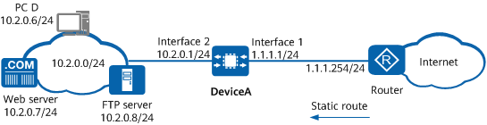

Example for Configuring Intranet Users to Access Intranet Servers Using Public Addresses
Networking Requirements
An enterprise has deployed DeviceA as the access gateway at the network border, and deployed a web server and an FTP server on the intranet to provide services for intranet users (PC D is used as an example). Due to limited IP address resources, the enterprise has only one available public IP address 1.1.1.1. This IP address is assigned to the WAN interface of DeviceA. To protect intranet servers against attacks from intranet users, the enterprise requires that NAT (NAT Server + source NAT) be configured on DeviceA to allow intranet users to access the intranet FTP and web servers and the Internet using the only available public IP address. Figure 1 shows the network diagram, in which the router is the access gateway provided by the ISP.

In this example, interfaces 1 and 2 represent 10GE 0/0/1 and 10GE 0/0/2, respectively.

Item |
Data |
Description |
|
|---|---|---|---|
10GE0/0/1 |
IP address: 1.1.1.1/24 |
1.1.1.1/24 is a public address provided by the ISP. |
|
10GE0/0/2 |
IP address: 10.2.0.1/24 |
Intranet servers use 10.2.0.1 as the default gateway address. |
|
NAT Server |
Name: policy_web Public IP address: 1.1.1.1 Private IP address: 10.2.0.7 Public port: 8080 Private port: 80 |
When intranet users send traffic to 1.1.1.1 through port 8080, DeviceA can forward the traffic to the web server based on this mapping entry. The web server has the private address 10.2.0.7 and private port number 80. |
|
Name: policy_ftp Public IP address: 1.1.1.1 Private IP address: 10.2.0.8 Public port: 21 Private port: 21 |
When intranet users send traffic to 1.1.1.1 through port 21, DeviceA can forward the traffic to the FTP server based on this mapping entry. The FTP server has the private address 10.2.0.8 and private port number 21. |
||
Source NAT policy |
Name: policy_nat1 Private address that can access the Internet: 10.2.0.6 |
- |
|
Default route |
Destination address: 0.0.0.0 Next-hop address: 1.1.1.254 |
Configure a default route to the Internet on DeviceA to enable it to forward traffic from intranet users to the ISP router. |
|
Configuration Roadmap
- Configure IP addresses for interfaces, enabling network connectivity.
- Configure NAT Server by specifying two static mapping entries, that is, one for the web server and one for the FTP server.
- Configure a source NAT policy to allow PC D to access intranet servers using a public address.
- Configure a default route on DeviceA to enable it to forward traffic from intranet users to the ISP router.
- Configure a static route to the public address of intranet servers on the ISP router.
Procedure
- Configure IP addresses for interfaces, enabling network connectivity.
# Configure an IP address for 10GE 0/0/1 and enable the NAT function on this interface.
<HUAWEI> system-view [HUAWEI] sysname DeviceA [DeviceA] interface 10ge 0/0/1 [DeviceA-10GE0/0/1] ip address 1.1.1.1 24 [DeviceA-10GE0/0/1] nat enable [DeviceA-10GE0/0/1] quit
# Configure an IP address for 10GE 0/0/2 and enable the NAT function on this interface.
[DeviceA] interface 10ge 0/0/2 [DeviceA-10GE0/0/2] ip address 10.2.0.1 24 [DeviceA-10GE0/0/2] nat enable [DeviceA-10GE0/0/2] quit
- Configure a source NAT policy.
[DeviceA] nat-policy [DeviceA-policy-nat] rule name policy_nat1 [DeviceA-policy-nat-rule-policy_nat1] source-address 10.2.0.6 32 [DeviceA-policy-nat-rule-policy_nat1] destination-address 10.2.0.7 32 [DeviceA-policy-nat-rule-policy_nat1] destination-address 10.2.0.8 32 [DeviceA-policy-nat-rule-policy_nat1] action source-nat easy-ip [DeviceA-policy-nat-rule-policy_nat1] quit [DeviceA-policy-nat] quit
- Configure NAT Server by specifying two static mapping entries, that is, one for the web server and one for the FTP server.
[DeviceA] nat server policy_web protocol tcp global 1.1.1.1 8080 inside 10.2.0.7 www no-reverse route [DeviceA] nat server policy_ftp protocol tcp global 1.1.1.1 ftp inside 10.2.0.8 ftp no-reverse route
- Enable the NAT ALG function for FTP.
[DeviceA] firewall detect ftp - Configure a default route on DeviceA to enable it to forward traffic from intranet users to the ISP router.
[DeviceA] ip route-static 0.0.0.0 0.0.0.0 1.1.1.254 - On the ISP router, configure a static route to the public address of intranet servers, with the next-hop address set to 1.1.1.1. The ISP router can then forward traffic destined for the intranet servers to DeviceA.
Contact the ISP network administrator to perform this step.
Verifying the Configuration
- Verify that intranet users can access intranet servers.
- When intranet users access intranet servers, check for the session entries with the destination addresses being the public address of intranet servers and the source addresses being the private addresses of intranet PCs. If such an entry is found, the post-NAT destination IP address is the private IP address of a server, and the post-NAT source IP address is an address in the address pool, the NAT policy has been configured successfully.
<HUAWEI> display session all verbose Session Table Information: Protocol : 6(TCP) SrcAddr Port Vpn : 10.2.0.6 2474 DestAddr Port Vpn : 1.1.1.1 8080 Time To Live : 60s NAT Info New SrcAddr : 10.2.0.1 New SrcPort : 2674 New DestAddr : 10.2.0.7 New DestPort : 80 Total : 1
Configuration Scripts
# sysname DeviceA # nat server policy_web protocol tcp global 1.1.1.1 8080 inside 10.2.0.7 www no-reverse route nat server policy_ftp protocol tcp global 1.1.1.1 ftp inside 10.2.0.8 ftp no-reverse route # interface 10GE0/0/1 ip address 1.1.1.1 255.255.255.0 nat enable # interface 10GE0/0/2 ip address 10.2.0.1 255.255.255.0 nat enable # firewall detect ftp # ip route-static 0.0.0.0 0.0.0.0 1.1.1.254 # nat-policy rule name policy_nat1 source-address 10.2.0.6 32 destination-address 10.2.0.7 32 destination-address 10.2.0.8 32 action source-nat easy-ip # return